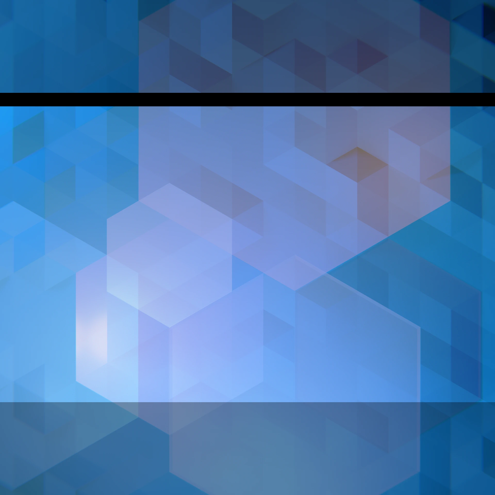
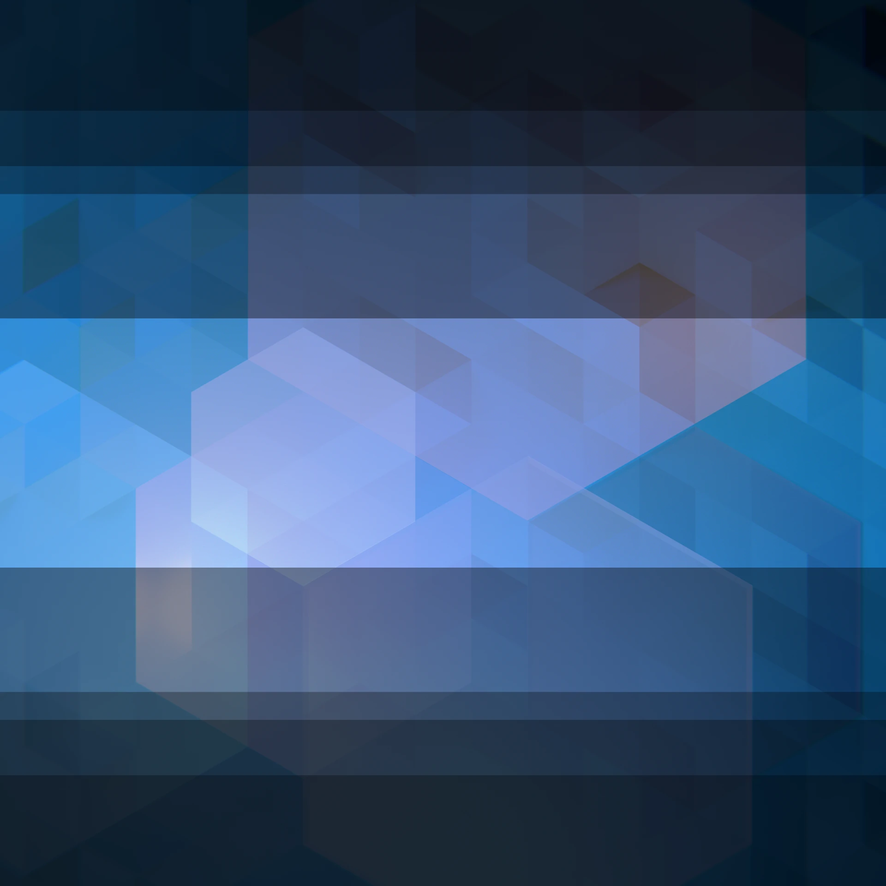
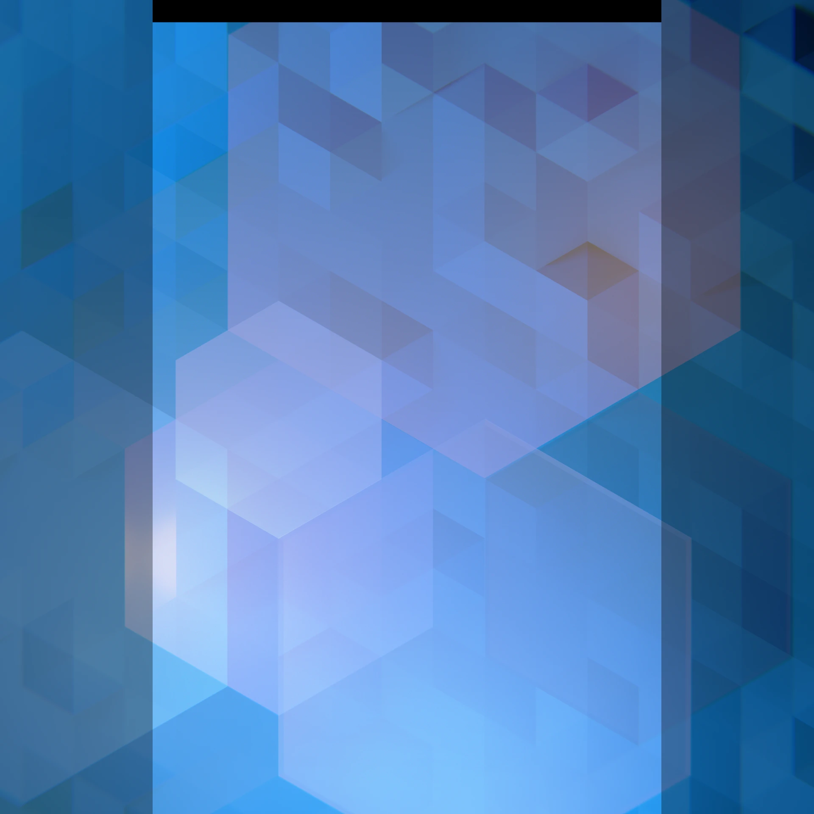
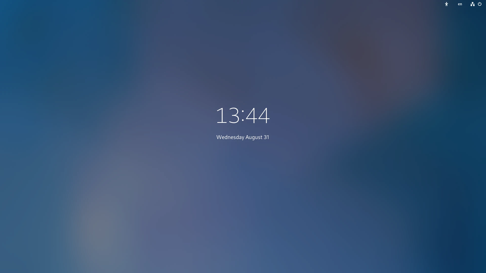
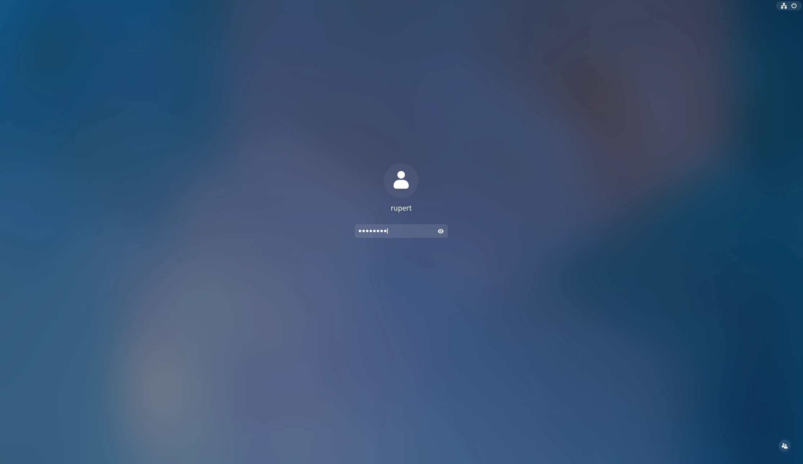

Backgrounds#
These guidelines are primarily intended for Linux distributions who are creating background wallpapers for GNOME. They document the technical considerations that should be taken into account when designing and creating background images.
Image size#
The recommended size for wallpaper images is 4096×4096px. This size aims to cover high resolution displays, ultrawide and portrait displays.
Scaling and cropping#
When creating backgrounds, it is important to be aware of how a background image will be cropped to fit different display sizes and orientations.
GNOME scales and fits background images to each display using the “zoom” method. The background image is scaled to the display, keeping its aspect ratio fixed, and keeping as much of the image visible as possible. Parts of the image that cannot be fitted on screen are excluded. Only the center of the image is guaranteed to be featured on all displays.
Additionally, system interface elements, such as the top bar, are overlaid on top of the background image.
For example, the following image illustrates the visible portion of a 4096×4096px background on a 1920×1200px display:
The following image illustrates how a range of landscape aspect ratios (32/9, 16/9, and 4/3) would be cropped to fit:
While landscape is the most common orientation for displays used with GNOME, portrait is also a consideration. Portrait displays are scaled and cropped as follows:
Background designs should aim to avoid awkward layouts when cropped to fit these different display sizes, and it is recommended to test backgrounds to ensure adequate performance at a range of display resolutions and orientations. An overlay image is available which can be used to test background designs.
{kind=link}
Lock screen#
Background images are utilized as part of GNOME’s lock screen, and it is important that background designs are suitable for this purpose.
The lock screen presents a blurred version of the background image with UI elements overlaid on top. In the initial presentation, the lock screen shows the time and date:
Then when authenticating, a login prompt is shown:
Background designs should look good when blurred on the lock screen. Care should be taken to ensure that designs do not appear muddy or overly diffuse when blurred in this way. Designs with strong visual elements shouldn’t look unbalanced when blurred.
Care should also be taken to ensure that visual elements in the background image do not conflict with the lock screen’s UI elements.
Light and dark mode#
From GNOME 42, it is possible to provide background images with light and dark variants. The light or dark background variant is used depending on whether the user has selected the light or dark UI style.
While it isn’t necessary to provide light and dark variants of every background, it is recommended to ensure that a good range of backgrounds have this feature, in order to provide a good level of support for GNOME’s dark mode feature.
When designing backgrounds that support dark mode, it is recommended to treat both background variants equally, and to approach the design as a pair. When processing photographs for use as light or dark, it is important to avoid the end result appearing artificial.
Backgrounds that support dark mode should link to the files for the light and dark versions in their XML definitions (see an example).